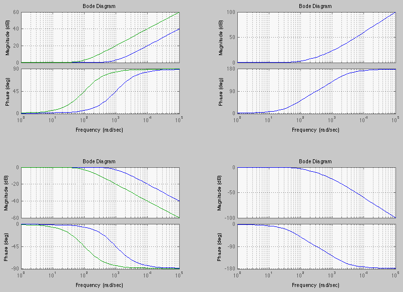
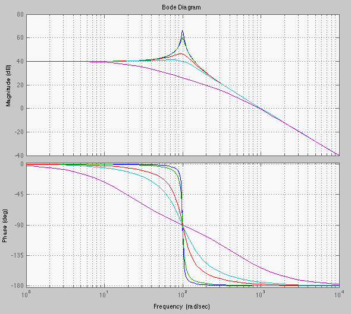

Next: Bode Plots of first Up: Appendix Previous: Bode Plots
 (139)
(139)
 (141)
(141)
 ,
,
 becomes ten times higher, then
becomes ten times higher, then
 is a straight line with a slop of 20 dB/dec that goes
through a zero-crossing at .
is a straight line with a slop of 20 dB/dec that goes
through a zero-crossing at .
Also consider two additional cases related to . First,
 . For example, when , we have:
. For example, when , we have:
Second, the plots of are similar to those of , except the
zero-crossing occurs at , i.e., .
 :
:
 (145)
.
(145)
.

 (146)
(146)
 is the corner frequency, we have
is the corner frequency, we have
 (e.g.,
):
(e.g.,
):
 (150)
(150)
 has zero slope when
has zero slope when  but a slope 20 dB/dec when . The straight-line asymptote of
is zero when
, when
but a slope 20 dB/dec when . The straight-line asymptote of
is zero when
, when  ,
but with a slope in between.
,
but with a slope in between.
 (152)
(152)
 (153)
(153)
 .
.
The figure below shows the plots of two first order systems corner frequencies
and  , together with the plots of their product, a
second order system.
, together with the plots of their product, a
second order system.

 (154)
. Consider the
following two cases:
(154)
. Consider the
following two cases:
First, if
 i.e., if , the denominator has two real and negative roots:
i.e., if , the denominator has two real and negative roots:
 (155)
(155)
 can be written as a product of two first order FRFs:
can be written as a product of two first order FRFs:
 (156)
(156)
 and
are the two time constant of the two
first order systems. Now the second order factor is the product of two first order
factors and
and
are the two time constant of the two
first order systems. Now the second order factor is the product of two first order
factors and
 and
.
and
.
Second, if  , i.e., the two roots are complex. We consider the numerator
and the denominator separately. The numerator is just a constant with zero phase and
log-magnitude of
. Next consider the
rest of the function:
, i.e., the two roots are complex. We consider the numerator
and the denominator separately. The numerator is just a constant with zero phase and
log-magnitude of
. Next consider the
rest of the function:
| (159) |
 (160)
(160)
 :
Now
and
:
Now
and
 :
:
:
:
![$\displaystyle Lm\;H(j\omega)\approx-10\;\log_{10}[\; (\frac{\omega}{\omega_n})^4 ]
=-40 \;\log_{10} \frac{\omega}{\omega_n} $](img458.svg) (163)
(163)
 (164)
(164)

The magnitude of the second-order factor is
 . When
. When  i.e.,
i.e.,
 , we have
, we have
 (166)
(166)
 is not at
is not at  , but at the resonant frequency
, but at the resonant frequency
 , which can be found by taking derivative of the magnitude of the denominator
with respect to
, which can be found by taking derivative of the magnitude of the denominator
with respect to  and setting it to zero:
and setting it to zero:
 , the peak is:
, the peak is:
 (169)
(169)